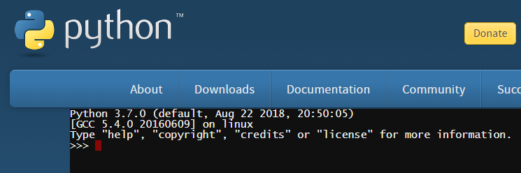

Uvod u Python¶
Python je jako popularan programski jezik opće namjene. Postao je poznat po svojoj jednostavnosti, lakoći učenja i brzini programiranja. Mnogi profesionalni programeri koriste Python barem kao pomoćni jezik, jer pomoću njega brzo i lako automatiziraju razne poslove. Zbog spomenutih dobrih osobina koristi ga i sve je više korisnika Pythona među ljudima drugih struka koji koriste programiranje na raznim područjima. Programski jezik Python je besplatan za upotrebu, a oko njega je formirana velika zajednica koja pridonosi njegovom daljnjem razvoju i općoj podršci na Internetu.
Pythonovim programskim jezikom jasno je da programiranje nije samo za profesionalne programere, isti način kao što pisanje nije samo za profesionalne pisce. Sve je više različitih poslova koji s umjerenim vještinama programiranja mogu postati nešto lakši, uspješniji ili produktivniji. Stoga ovaj priručnik nije namijenjen samo budućim profesionalcima u programiranju, već svima koji mogu imati koristi od programiranja u svojim poslovima (ili drugdje).
Dakle, pogledajmo osnove Pythona i vidimo kako se naredbe i programi pišu na ovom programskom jeziku.
Python interpreter¶
Za izvršavanje programa koje pišemo na Pythonu potreban nam je program koji se zove Python interpreter. Ovaj program interpretira i zatim izvršava Python naredbe. Pythona interpreter mogu prihvatiti čitave programe i izvršavati ih, a mogu raditi i u interaktivnom režimu, u kojem se svaka naredba koju unesemo izvršava odmah.
Okruženje u kojem se Python interpreter izvršava naziva se školjka. Postoje razne školjke u koje se može izvršiti odgovarajući Python interpreter. Stoga imamo nekoliko načina za pokretanje Python školjke.
Školjka online
Web stranica https://www.python.org/shell sadrži internetsku školjku, koju možete odma koristiti za interaktivni rad (dovoljno je imati pristup internetu).
{kind=link}
Instalacija Pythona i okuruženje IDLE
Da biste naučili programiranje na Pythonu, svakako je korisno preuzeti Python s https://www.python.org/downloads/ i instalirati ga ako već nije instaliran na vašem računalu. Uz instalaciju Pythona, dobivate i program pod nazivom IDLE (integrirano okruženje za razvoj i učenje). Ovo integrirano okruženje uključuje i školjku na kojoj možete izvršavati Python programe. Kad na računalu pokrenete IDLE, dobit ćete sljedeći prozor u kojem možete interaktivno raditi i pisati i izvršavati Python programe.

Školjka u komandnom prozoru (CMD program)
Drugi način za pokretanje Python školjke je otvaranje komandnog prozora (u Windows sustavima to se izvodi pokretanjem cmd programa), a zatim u komandni prozor upišite Python (ovdje pretpostavljamo da je Python instaliran tako da mu je dostupan iz svake mape, inače se prvo trebate pozicionirati u mapu Python interpreter).

U nastavku možete odabrati školjku koju želite, u svakoj se radi na isti način.
Interaktivni rad¶
Pokrenite Python školjku. Znakovi >>> koje vidite predstavljaju prompt. Na ovaj način Python interpreter nam govori da je spreman primiti naredbu.
Kada interaktivno radite, Python interpreter može se koristiti i kao kalkulator - utipkajte izraz i dobit ćete njegovu vrijednost: .. code:
>>> 3 + 2
5
>>> 3.25 + 2.25
5.5
>>> 3 - 2
1
>>> 4 * 2
8
>>> 4 / 2
2.0
Sljedeći simboli koriste se za osnovne računske operacije u Pythonu (kao u većini programskih jezika):
zbrajanje:
+oduzimanje:
-množenje:
*dijeljenje:
/
Pored ovih osnovnih i najčešće korištenih, ponekad nam je potrebno i nekoliko drugih operacija, koje se rjeđe koriste. To su:
cijeli dio količnika:
//, ma primjer vrijednost izraza \(7 // 2\) je \(3\).Ostatak pri dijeljenju cijelih brojeva:
%, na primjer vrijednost izraza \(7 \% 2\) je \(1\).Potenciranje:
**, na primjer vrijednost izraza \(2 ** 4\) je \(2^4 = 16\).
>>> 7 // 2
3
>>> 7 % 2
1
>>> 2 ** 4
16
Računala razlikuju cjelobrojne i stvarne brojeve, zapisuju ih drugačije u memoriju i s njima obavljaju račune na različite načine. Dakle, u programiranju vrijednost 2.0 nije sasvim ista kao 2, iako su vrijednosti matematički jednake (znak == koristi se za usporedbu dviju vrijednosti).
>>> 2.0 == 2
True
>>> type(2.0)
<class 'float'>
>>> type(2)
<class 'int'>
Ovo što vidimo znači da je prvi broj stvaran, a drugi cijeli broj (riječ float označava realne brojeve, a int označava cijeli brojeve).
U vezi s tim, imajte na umu da je u Pythonu rezultat uobičajene podjele / uvijek stvaran broj, čak i kada se dijel cijeli brojevi i djeljivi (nema ostatka). Kad želimo da rezultat podjele između dva cijela broja bude cijeli broj, trebali bismo upotrijebiti operater cjelobrojne podjele //.
>>> 6/2
3.0
>>> 6//2
3
Za ostale navedene operacije rezultat je cijeli broj kad su oba operanda (brojevi na koje se operacija odnosi) cijeli brojevi i stvaran ako je barem jedan operand stvaran.
>>> 3 + 2
5
>>> 3.0 + 2
5.0
>>> 3 + 2.0
5.0
>>> 2.0 ** 4
16.0
Pravila računanja vrijednosti izraza su ista kao i u matematici:
Operacija potenciranja se izvršava prije ostalih navedenih operacija. Ako ima više operacija potenciranja u nizu, one se izvršavaju s desna na lijevo.
Prije zbrajanja i oduzimanja primjenjuju se operacije množenja, dijeljenja i ostatka. Kad ih ima više u nizu, oni se izvode s lijeva na desno.
Kad nam je potreban drugačiji redoslijed računanja, koristimo zagrade (prvi se izračunava u zagradama).
>>> (5-3) * (2+2)
8
>>>
Završavamo svoj rad u školjki Pythona upisivanjem naredbe quit().
>>> quit()
Računanje - provjerite svoje znanje
Provjerite jeste li razumjeli pravila računanja u Pythonu odgovaranjem na sljedeća pitanja.
- 15
- Znak + označava zbrajanje, a znak * množenje.
- 30
- Točno!
- 50
- Obratite pažnju i na prioritet operacija (isti je kao i u matematici).
- 125
- Znak + označava zbrajanje, a znak * množenje.
Q-1: Koja je vrijednost izraza 5 + 5 * 5?
- 3
- Pročitajte ponovno o računanju
- 0
- Obratite pažnju i na prioritet operacija.
- 5
- Točno!
- 6
- Znak % označava ostatak prilikom dijeljenja cijelih brojeva.
Q-2: Koja je vrijednost izraza 4 + 11 % 5?
- 60
- znakovi ** predstavljaju potenciranje
- 100000000
- Točno!
- 1000000
- Operacije potenciranja se izvršavaju s desna na lijevo, tako da je a**b**c isto što i a**(b**c).
- 300
- Oba dvije navedene operacije su operacije potenciranja.
Q-3: Koja je vrijednost izraza 10 ** 2 ** 3?
- 1.666666
- Pročitajte ponovo o označavanju i redoslijedu izvršavanja (prioritetu) operacija
- 1
- Prvo se izvršava cijelobrojno dijeljenje
- 11.666666
- Oznaka // predstavlja cijelobrojno dijeljenje.
- 12
- Točno!
Q-4: Koja je vrijednost izraza 15 - 10 // 3?
- 5.0
- Točno!
- 5
- Rezultat ovog dijeljenja je uvijek realan broj.
- 1.0
- Prvo se izračunava dio u zagradi.
- 1
- Prvo se izračunava dio u zagradi.
Q-5: Koja je vrijednost izraza 15 / (5 - 2)?